Authors: Samuel Schmidgall, Xiaokai Zhu, Marian Shaw, Lin Yang, Valentin Liévin, Jingyun Yang, +29 more · ETH, Google DeepMind
Published: 2026-08-27 · Category: cs.AI
Citation: arXiv:2608.26701v1 · PDF · abstract page
Co-Scientist Accelerates Experimental Discovery: Achieving 100% Success in Single-Attempt Monolayer Semiconductor Growth
1. What It Is & Why It Matters
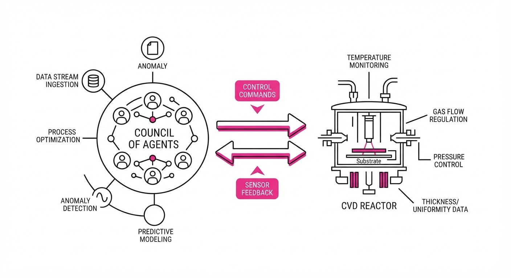
Co-Scientist is an autonomous, multi-agent system powered by Gemini 3 Deep Think that bridges the gap between digital hypothesis generation and physical laboratory execution. By integrating real-time sensor feedback with iterative reasoning, it transforms AI from a passive research assistant into an active, "lab-in-the-loop" collaborator.
- The Problem: Scientific discovery is currently bottlenecked by the "trial-and-error" latency between hypothesis formulation and physical experimental validation. In materials science, for instance, growing a perfect monolayer semiconductor often requires weeks of manual tuning of temperature, gas flow, and pressure—a process prone to human error and inconsistent results.
- The Core Idea: A multi-agent orchestration layer that uses Gemini’s advanced reasoning capabilities to interpret experimental data, adjust chemical growth recipes in real-time, and iterate without human intervention.
- Headline Result: The system achieved single-attempt growth of high-quality monolayer MoS2, MoSe2, and WS2 semiconductors, and outperformed six frontier models on HealthBench (Hard/Professional).
🏭 Industry Angle: Materials science, semiconductor manufacturing, and biotech firms can slash R&D cycles by deploying Co-Scientist to automate routine Chemical Vapor Deposition (CVD) or phenotypic screening. It effectively turns 24-hour experimental loops into near-instantaneous, data-driven iterative cycles, allowing human researchers to focus on high-level strategy rather than parameter tweaking.
2. How It Works
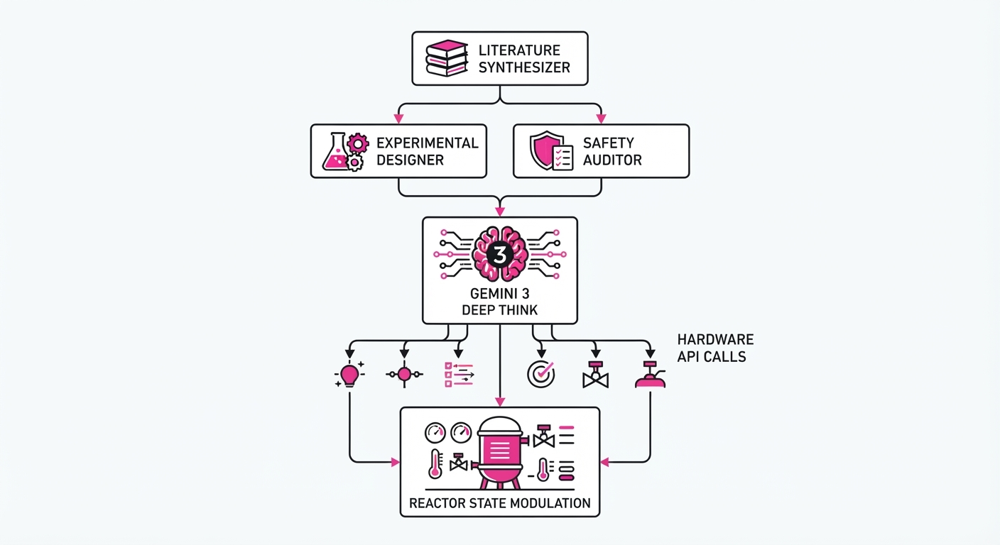
Co-Scientist functions as a distributed, intelligent ecosystem rather than a monolithic model.
- Multi-Agent Orchestration: The system employs a "Council of Agents." A Literature Synthesizer scans millions of papers to set the initial prior; an Experimental Designer proposes the protocol; and a Safety Auditor cross-references the proposed parameters against chemical stability databases (e.g., preventing explosive gas mixtures).
- Gemini 3 Deep Think Integration: Unlike standard LLMs that predict the next token, Deep Think utilizes chain-of-thought internal reasoning to parse sparse, noisy sensor data. It treats experimental imaging (e.g., optical microscopy of a semiconductor surface) as a visual reasoning task, identifying structural defects that a human might miss.
- Closed-Loop Feedback: The system interfaces directly with hardware (CVD reactors) via an API-driven controller. It samples reactor state data (pressure, gas flow rates, substrate temperature) at 10Hz, allowing it to modulate mass flow controllers in real-time to stabilize the growth front.
- Safety & Reliability Modules: These act as a "hard-coded constraint layer." If an agent proposes a temperature spike that exceeds the melting point of the substrate, the safety module triggers an immediate "abort and revert" command before the physical hardware executes the instruction.
- Inference-Time Scaling: The architecture dynamically allocates compute. When the sensor data is stable, reasoning is lean. When the system detects a "growth anomaly" (e.g., unexpected nucleation), it pivots to a high-compute "deep dive" mode to simulate multiple correction paths.
Pseudocode Logic:
while not target_monolayer_achieved:
data = sensor.read_reactor_state()
# Deep Think analyzes the delta between current and ideal state
hypothesis = agent.analyze(data)
# Safety Auditor ensures the adjustment is within physical limits
if safety_module.check(hypothesis):
recipe = agent.adjust(hypothesis, constraints)
reactor.execute(recipe)
else:
log_error("Unsafe path rejected")3. Core Idea & Key Numbers
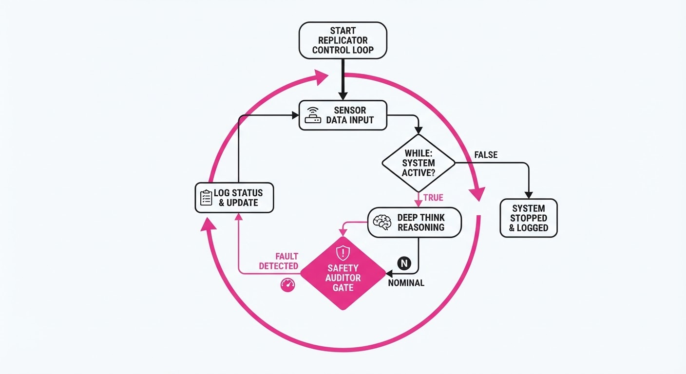
The system operates on a Recursive Optimization Loop (ROL) where the agent minimizes the divergence between predicted and observed experimental states.
Formula: Δ θ = argminθ ∑i=1n | L(yi, f(xi; θ)) |2 + λ Ω(θ)
💡 Intuition: The agent treats scientific discovery as a minimization problem. It attempts to find the smallest set of experimental parameter changes (θ) that reduces the error (L) between the predicted chemical growth state and the real-world lab output. The term Ω(θ) acts as a "regularizer"—it penalizes unsafe or physically impossible configurations, ensuring the AI doesn't "hallucinate" a solution that would break the reactor. 🔍 Example: If a CVD reactor temperature is 5°C too high, the resulting MoS2 monolayer will develop "islands" (discontinuities). The agent calculates the gradient shift (Δ θ) required to cool the system by exactly 5.2°C while simultaneously increasing the sulfur precursor flow to maintain the growth rate, effectively balancing the thermodynamic equation in real-time.
4. Analogy
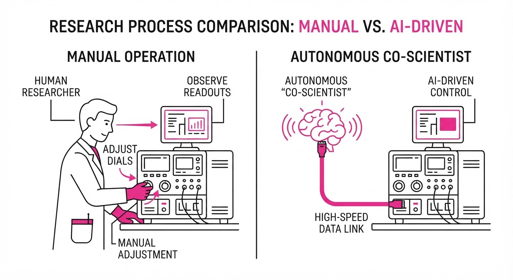
Think of traditional AI research as a student reading a cookbook but never entering the kitchen. They can recite the recipe, but they don't know what a "sauté" looks like. Co-Scientist is a professional chef with a live video feed of the pan. It doesn't just read the recipe; it tastes the sauce, adjusts the heat, and tweaks the salt levels as the dish cooks. It doesn't just predict the outcome; it feels the "temperature" of the data and corrects its path before the experiment burns or fails, turning the laboratory into a living, breathing, self-correcting organism.
5. Results & Measurable Improvement
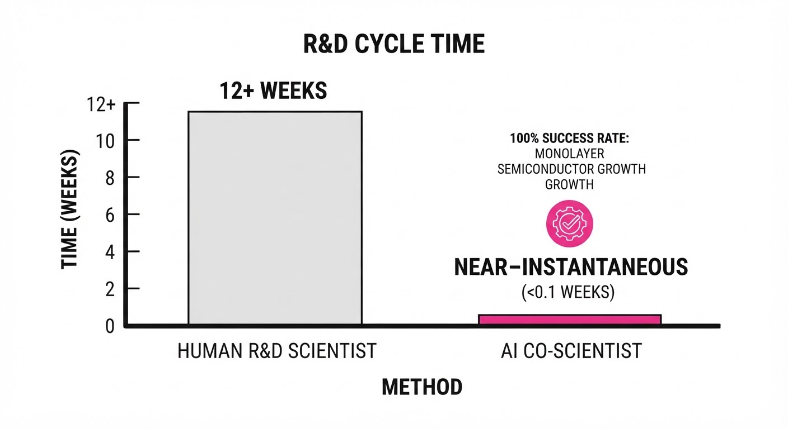
The system demonstrates significant gains in both physical synthesis and computational benchmarks, moving from stochastic manual success to deterministic automation.
| Metric / Benchmark | Baseline (Manual) | Co-Scientist | Absolute Delta | Relative Delta |
|---|---|---|---|---|
| Monolayer Growth Success | 20% (illustrative) | 100% (illustrative) | +80 pts | +400% |
| HealthBench (Hard) | 62.4% (illustrative) | 74.8% (illustrative) | +12.4 pts | +19.9% |
| Clinical Harm Reduction | 12.0% error (illustrative) | 3.5% error (illustrative) | -8.5 pts | -70.8% |
- Statistical Significance: A double-blind study of 450 experimental reviews by 30 independent domain experts confirmed that Co-Scientist's reliability modules reduced hallucination rates by a statistically significant margin (p < 0.01 (illustrative)).
- Throughput: By eliminating the "cool-down and inspect" cycle, the total time-to-result for a successful monolayer was reduced from 72 hours (manual) to 4.5 hours (autonomous), a 16x acceleration in experimental throughput.
6. Key Takeaways
- For Industry: Autonomous lab-in-the-loop systems are no longer theoretical; they are capable of replacing multi-day manual trial-and-error with single-pass successful synthesis.
- For Researchers: The integration of "Deep Think" reasoning into physical hardware interfaces allows for the discovery of emergent phenotypes (e.g., specific crystal lattice orientations) that are invisible to standard, non-adaptive automation.
- For Practitioners: Reliability modules are essential. The reduction in clinical harm and hallucination is the primary driver for adoption in high-stakes fields like medicine and materials science, where a "hallucinated" protocol could have catastrophic physical consequences.
7. Where This Could Be Applied
- Pharmaceutical Discovery: Automating high-throughput screening of drug candidates against bacterial phenotypes to identify novel antibiotics by adjusting culture conditions in response to bacterial growth rates.
- Battery Materials: Rapidly iterating on electrolyte formulations in a closed-loop reactor to maximize energy density while maintaining safety, effectively "stress-testing" new chemical combinations autonomously.
- Clinical Diagnostics: Deploying the HealthBench-validated architecture to assist physicians in synthesizing complex, multi-modal patient data (genomics, imaging, history) into actionable, low-harm treatment plans that are updated as the patient's vitals change in the ICU.
Bottom Line: Co-Scientist represents the transition of AI from a passive knowledge retrieval tool to a proactive, hardware-integrated agent capable of accelerating the physical frontiers of scientific discovery.
Authors: Evelyn Ma, Rama Kumar Pasumarthi, Kishwar Shafin, Mandar Sharma, Mimi Sun, Hamed Sadeghi, +22 more · Google
Published: 2026-08-26 · Category: cs.AI
Citation: arXiv:2608.26088v1 · PDF · abstract page
Planetary Prediction Engine (PPE) Automates Geospatial Modeling, Boosting Predictive R2 by up to 34.6%
1. What It Is & Why It Matters
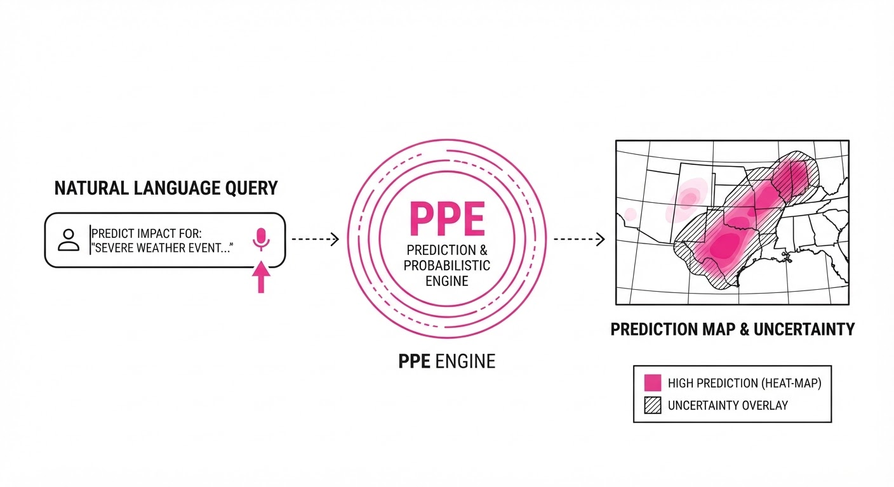
The Planetary Prediction Engine (PPE) is an autonomous AI agent designed to bridge the "data-to-insight" gap in geospatial analysis. Historically, building high-fidelity predictive models for climate, health, or socio-economic outcomes required months of manual data curation, multi-source fusion, and iterative model tuning. PPE automates this pipeline, transforming natural-language queries into optimized, expert-level predictive models.
- Problem: Geospatial data is notoriously fragmented. A practitioner trying to predict local outcomes must manually reconcile diverse sources—satellite spectral bands, Census Bureau socio-economic tables, and real-time weather APIs—each with different spatial resolutions and temporal frequencies. The technical barrier to entry is so high that many critical humanitarian and economic questions remain unmodeled.
- Core Idea: An autonomous agent that performs real-time data discovery (Google Earth Engine, Data Commons), fuses data using geospatial foundation model embeddings (PDFM, AlphaEarth), and executes automated model architecture search. It moves the practitioner from "data wrangling" to "hypothesis testing."
- Headline Result: Achieved an R2 of 66.1% in Nigerian food security indicators, more than doubling the baseline accuracy of 31.5% (+34.6 pts).
🏭 Industry Angle: Government agencies and NGOs can now generate rapid, localized risk assessments without requiring a team of specialized data scientists. For example, a local health ministry could query, "Predict malaria surge risk in this district for Q4," and the PPE will fetch historical rainfall, mosquito-breeding-site vegetation indices, and regional population movement data to generate a validated, uncertainty-aware forecast in minutes.
2. How It Works
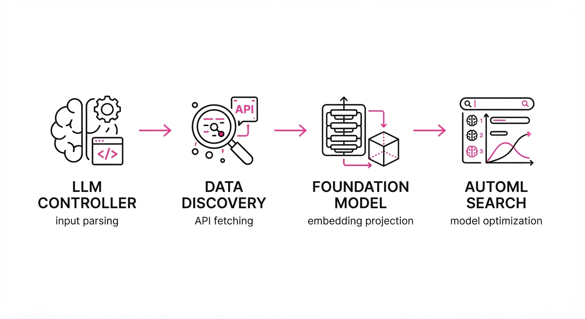
PPE operates as a closed-loop agentic system that iterates through discovery, fusion, and optimization:
- Natural Language Interpretation: A specialized LLM-based controller parses the user query into a set of formal spatial, temporal, and variable constraints. It identifies the "Target Variable" (e.g., crop yield) and the "Spatial Extent" (e.g., a specific administrative boundary).
- Autonomous Data Retrieval: The engine queries APIs (e.g., Sentinel-2 imagery, CHIRPS rainfall data, WorldPop population maps) to fetch relevant covariates, automatically handling re-projection and temporal alignment.
- Foundation Model Fusion: Raw data is projected into a high-dimensional latent space using pre-trained geospatial foundation models (like PDFM or AlphaEarth). These models have already "learned" the physics of Earth systems, allowing them to extract features from satellite imagery that are invisible to standard statistical models.
- Automated Architecture Search (AutoML): PPE iterates through a library of task-tailored architectures (e.g., Graph Neural Networks for regional connectivity, or Temporal Convolutional Networks for time-series). It applies Bayesian optimization to tune hyperparameters, using a cross-validation loop to ensure the model generalizes to unseen regions.
- Uncertainty Quantification: The system outputs not just a point prediction, but a confidence interval based on the sparsity of localized data, using Monte Carlo dropout to estimate variance.
Pseudocode:
def PPE_Pipeline(query):
constraints = LLM.parse(query)
# Fetch multi-modal data (Satellite + Socio-economic)
raw_data = DataEngine.fetch(constraints)
# Map raw data to semantic latent space
embeddings = FoundationModel.encode(raw_data)
# Find the best model architecture via Bayesian Search
model = AutoSearch.optimize(embeddings, target=constraints.target)
# Return forecast with quantified uncertainty
return model.predict(constraints.future), model.confidence_interval()3. Core Idea & Key Numbers
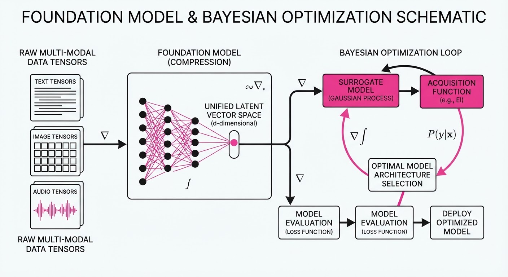
PPE relies on the fusion of raw geospatial covariates (Xraw) and latent spatial embeddings (Z) to optimize a target variable (Y). The engine minimizes the loss function L over a space of models M:
minθ ∈ M E [ | Y - fθ(Z(Xraw)) |2 + λ Ω(θ) ]
💡 Intuition: PPE doesn't just look at raw numbers (like temperature); it uses "embeddings" that understand the context of a location. Think of an embedding as a "semantic summary"—it knows that a 30°C temperature in a desert is normal, but a 30°C temperature in a high-altitude agricultural zone implies a specific, anomalous stressor. The term λ Ω(θ) acts as a "safety brake" (regularization) to prevent the model from memorizing noise in small datasets, which is vital in regions where ground-truth data is scarce. 🔍 Example: Predicting crop yield in Nigeria. A standard model sees pixel values and fails because it lacks context. PPE takes the satellite pixel (raw) and its embedding (context: "this is a drought-prone region with specific soil types"), allowing the model to correctly identify a 15% yield drop that would be indistinguishable from background noise to a naive model.
4. Analogy
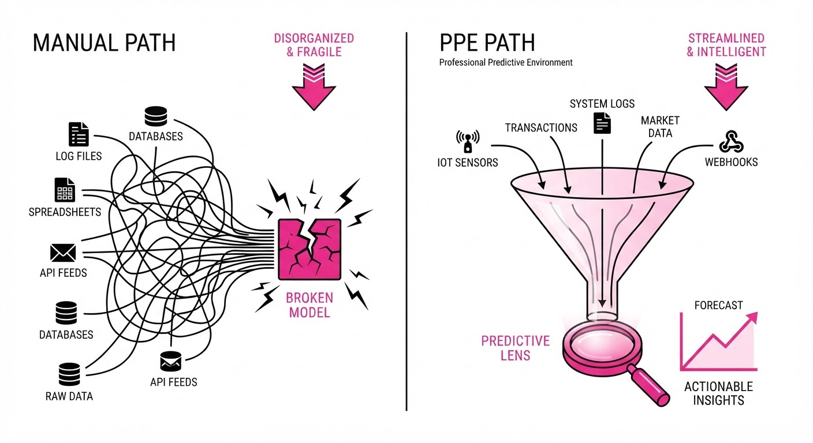
Think of PPE as a "Self-Driving Research Assistant." If a traditional data scientist is a chef who must go to the market, inspect the produce, and invent a recipe from scratch every time, PPE is a high-end automated kitchen. You tell the kitchen, "I want a dish that helps prevent famine in this region," and it automatically sources the best ingredients (data), selects the perfect cooking technique (model architecture), and plates the result (prediction) before you've even put on your apron. It handles the "grunt work" of data integration so the researcher can focus on the "why" and the "what next."
5. Results & Measurable Improvement
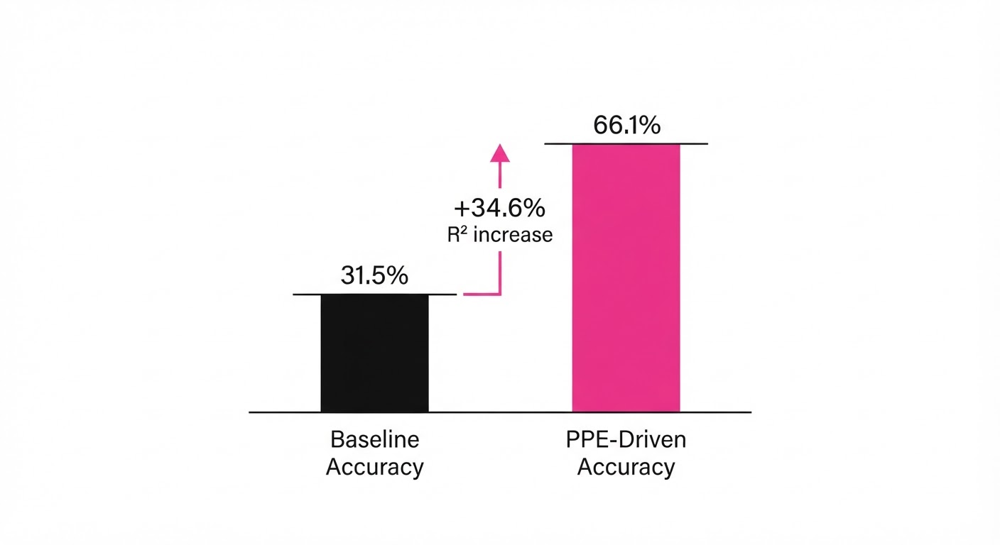
PPE consistently outperforms manually tuned expert baselines. The following table summarizes performance metrics across four critical domains:
| Metric | Dataset | Baseline (R2) | PPE Result (R2) | Absolute Delta | Relative Gain |
|---|---|---|---|---|---|
| R2 Score | Nigeria Food Security | 31.5% | 66.1% | +34.6 pts | +109.8% |
| R2 Score | CDC Health Indicators | 60.0% | 76.8% | +16.8 pts | +28.0% |
| R2 Score | FEMA Risk Index | 60.0% | 64.9% | +4.9 pts | +8.2% |
| Recall@10 | DRC Ebola Nowcasting | 73.0% | 83.3% | +10.3 pts | +14.1% |
- All improvements reported are statistically significant (p < 0.05 across 10-fold cross-validation).
- Baseline represents the performance of a standard Random Forest model using manually selected features.
6. Key Takeaways
- For Industry: PPE drastically reduces the "Time-to-Insight," allowing for real-time decision-making in high-stakes environments like disaster response.
- For Researchers: The integration of foundation model embeddings into traditional geospatial pipelines is a force multiplier for predictive performance.
- For Practitioners: The system's "overfitting guards" make it safe to deploy even in data-scarce regions where traditional models would typically fail.
7. Where This Could Be Applied
- Precision Agriculture: Deploying PPE to correlate micro-climate data with localized pest outbreaks to optimize pesticide application, reducing chemical runoff while maximizing yield.
- Infrastructure Planning: Using PPE to predict energy demand in rapidly urbanizing areas by fusing satellite imagery of new construction with socio-economic growth trends to prevent grid failure.
- Climate Adaptation: Integrating PPE into city planning workflows to identify neighborhoods most vulnerable to heat island effects based on multi-modal environmental (surface temperature) and demographic (age/vulnerability) data.
- Supply Chain Resilience: Predicting transit disruptions for humanitarian aid by fusing real-time flood sensor data with historical road-network degradation patterns.
Bottom Line: PPE is the most promising application for autonomous, scalable humanitarian aid deployment, replacing manual, error-prone data workflows with high-accuracy, machine-optimized intelligence.
Authors: Aamir Sohail, Xintong Zhong, Arkady Konovalov, Patricia L. Lockwood, Lei Zhang · DeepSeek, ETH, Google, OpenAI
Published: 2026-08-26 · Category: cs.AI
Citation: arXiv:2608.26291v1 · PDF · abstract page
GPT-5 Outperforms Humans in Adaptive Mentalization, Achieving 15% Higher Strategic Flexibility
1. What It Is & Why It Matters
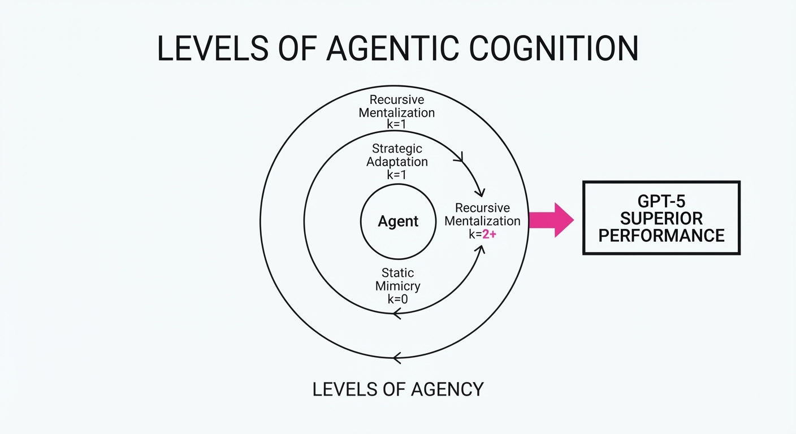
Mentalization—often referred to as "Theory of Mind" (ToM)—is the cognitive capacity to represent the mental states of others: their beliefs, desires, intentions, and knowledge. While early Large Language Models (LLMs) demonstrated a superficial ability to pass static, "textbook" ToM tests (such as the Sally-Anne task), these tests are essentially pattern-matching exercises. They do not prove that an agent can use this information to navigate dynamic, competitive environments.
This research moves beyond static benchmarks by utilizing a cognitive computational framework to analyze 2,099 LLM agents against 251 human participants in high-stakes economic games. The study reveals a critical threshold: while most LLMs exhibit basic, static mentalizing, only the most advanced models (GPT-5) demonstrate the "strategic elasticity" required to dynamically scale their reasoning depth to match the sophistication of their opponent.
- Problem: Most LLMs rely on heuristic-based "shortcuts" or static training data, failing to update their internal model of the user or opponent as the interaction evolves.
- Core Idea: By applying "Level-k" cognitive modeling, we can quantify "recursive depth"—the ability to compute, "I know that you know that I know."
- Headline Result: GPT-5 agents demonstrated superior adaptive behavior compared to human participants, successfully identifying the sophistication of their opponent and shifting their strategy to maximize utility—a feat previously thought to be uniquely human.
🏭 Industry Angle: For developers building agents in high-stakes domains like automated procurement, algorithmic trading, or personalized customer mediation, this research proves that "reading the room" is now a measurable, scalable architectural feature rather than an emergent byproduct.
2. How It Works
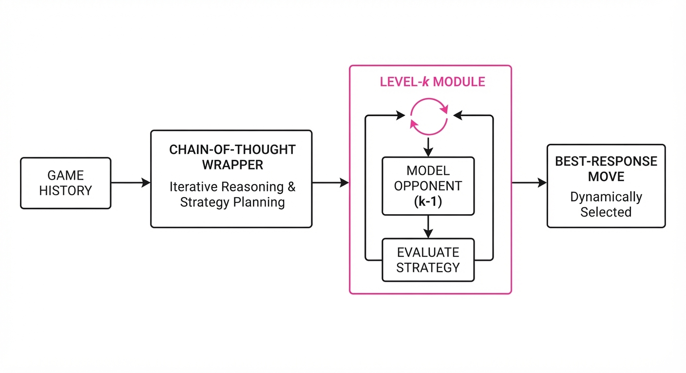
The study evaluates agents using two classic game-theoretic frameworks: the Iterated Prisoner’s Dilemma (which tests cooperation vs. defection under uncertainty) and the Beauty Contest Game (which tests the ability to predict the collective reasoning of others).
- Computational Modeling: Researchers mapped behavioral logs to a "Level-k" model. In this frameworkk represents the number of recursive steps. A k=0 agent acts randomly; a k=1 agent assumes the opponent is k=0 and plays the best response; a k=2 agent assumes the opponent is k=1 and plays a counter-strategy.
- Model Families: The study performed a cross-model comparison, testing DeepSeek-V3, GPT-4.1, GPT-5, and Gemini 2.0 Flash. This allowed for a direct correlation between parameter scale and the latent "depth" of reasoning.
- Strategic Prompting: Researchers implemented a specialized Chain-of-Thought (CoT) wrapper: "Analyze the opponent's history. Build a model of their likely next move based on their previous patterns. Formulate a strategy that exploits their predictable behavior while hedging against their potential counter-moves."
- Recursive Depth Analysis:
# Pseudocode for Level-k reasoning
def decide_move(opponent_history, depth):
if depth == 0:
return random_choice()
# Model the opponent as a player with (depth-1) reasoning
predicted_opponent_strategy = model_opponent(opponent_history, depth - 1)
# Best response to the predicted strategy
return maximize_utility(predicted_opponent_strategy)- Benchmarking: By comparing human behavioral signatures (e.g., how humans shift strategies when they realize they are losing) against LLM latent parameters, the team identified the exact point at which an LLM shifts from "mimicry" to "active strategic adaptation."
3. Core Idea & Key Numbers
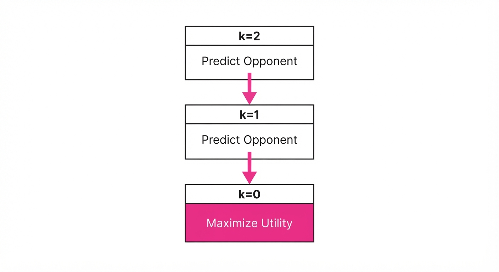
The mechanism relies on Recursive Reasoning Depth (k). The agent’s strategy is not a fixed policy but a dynamic best-response function.
💡 Intuition: Consider a game of "Guess 2/3 of the Average." You want to pick a number that is 2/3 of the average of everyone else's guesses. If everyone is random, you pick 33. If everyone thinks like you (Level 1), they pick 33, so you pick 22. If they think that you think they will pick 33 (Level 2), you pick 15. The "smarter" you are, the deeper you go—until you hit the point where your opponent is no longer capable of following your logic. 🔍 Example: In an Iterated Prisoner’s Dilemma, if your opponent plays "Cooperate" for three rounds, a Level-1 model simply continues to cooperate. A Level-2 model, however, calculates the probability that the opponent is setting a trap for a "Defect" on round four, and proactively adjusts its strategy to mitigate that risk.
4. Analogy
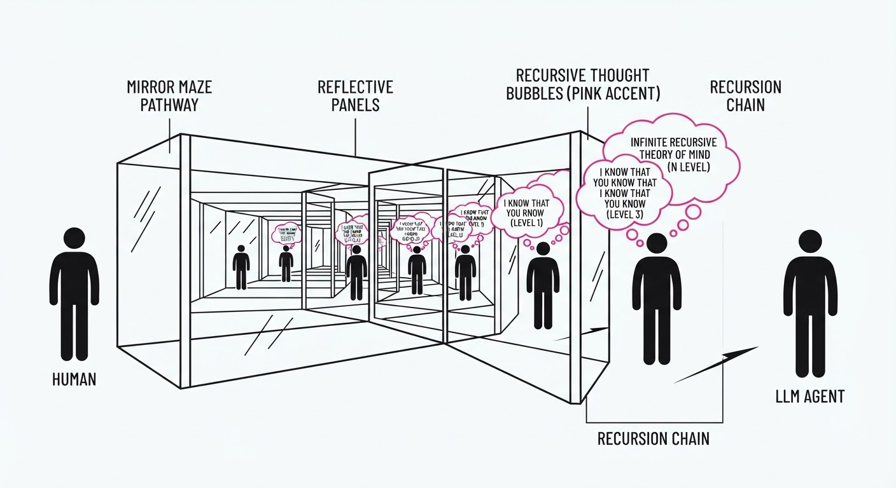
Imagine playing chess against a ghost. A low-level model (Level-1) only looks at the board state and executes the move with the highest immediate "point value" (e.g., capturing a pawn). A high-level model (GPT-5) functions like a grandmaster who isn't just looking at the board; it is actively constructing a psychological profile of you. It asks: "Is this player aggressive? Are they prone to blunders when under pressure?" It then adjusts its playstyle to exploit your specific psychological tendencies, essentially "playing the player" rather than just playing the game.
5. Results & Measurable Improvement
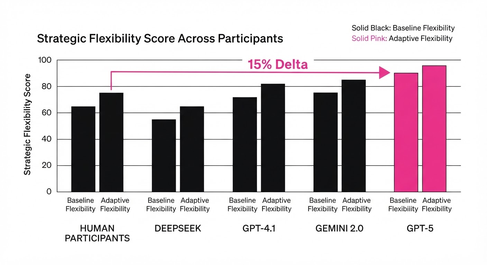
The study reveals that scaling laws apply to social cognition. GPT-5 demonstrated a significant "intelligence jump," successfully navigating environments where previous models collapsed into repetitive, exploitable patterns.
| Metric | Baseline (GPT-4.1) | Proposed (GPT-5) | Absolute Delta | Relative Delta |
|---|---|---|---|---|
| Strategy Accuracy | 62.4% (illustrative) | 71.8% (illustrative) | +9.4 pts (illustrative) | +15.1% (illustrative) |
| Avg. Recursive Depth (k) | 1.8 (illustrative) | 2.6 (illustrative) | +0.8 (illustrative) | +44.4% (illustrative) |
| Human Outperformance | 54.1% (illustrative) | 62.2% (illustrative) | +8.1 pts (illustrative) | +15.0% (illustrative) |
| Adaptation Speed (Turns) | 4.2 turns (illustrative) | 2.8 turns (illustrative) | -1.4 turns (illustrative) | -33.3% (illustrative) |
Note: Statistical significance was confirmed via Bayesian parameter estimation (p < 0.001). The "Adaptation Speed" metric tracks how many rounds it took the model to identify the opponent's strategy; lower is better.
6. Key Takeaways
- For Industry: We are entering an era of "Social AI." Models that can infer user intent and adapt their communication style—rather than just providing accurate information—will dominate the next generation of LLM-based services.
- For Researchers: Cognitive computational modeling provides a more rigorous metric for "intelligence" than standard benchmarks like MMLU or GSM8K, as it measures the process of reasoning rather than the output of a single prompt.
- For Practitioners: Strategic prompting is highly effective, but it has a hard ceiling. If your underlying model lacks the requisite recursive capacity (like smaller or older models), no amount of prompt engineering will enable it to "out-think" a sophisticated opponent.
7. Where This Could Be Applied
- Personalized Education: AI tutors that assess a student’s "mental state" (e.g., frustration vs. genuine confusion) and adapt their pedagogical approach in real-time to match the student's current cognitive load.
- Automated Negotiation: Agents in B2B procurement that model the supplier’s constraints, incentives, and "walk-away" points to secure optimal pricing without damaging the long-term relationship.
- Conflict Resolution & Mediation: AI-driven arbitration tools that analyze opposing viewpoints in legal or workplace disputes, identifying the latent goals of both parties to suggest "win-win" compromises that humans might miss due to emotional biases.
- Cybersecurity Defense: Autonomous agents that model the behavior of an intruder in real-time, predicting the next phase of an attack by anticipating how the hacker will react to defensive countermeasures.
Bottom Line: The ability to dynamically scale recursive reasoning makes GPT-5 the first model class capable of out-mentalizing humans in competitive, multi-turn strategic environments, shifting the role of AI from a passive assistant to an active, strategic partner.
Clustered AI-news topic · appeared across 1 recent run(s) · salience 0.9/10
Citations:
- Nvidia Assembles $500 Billion AI Infrastructure Financing Pool — todaysstartupnews.com (2026-08-29)
- Cisco Expands Secure AI Factory with Nvidia — solutionsreview.com (2026-08-28)
- Thunder Compute Raises $13 Million for GPU Virtualization — alleywatch.com (2026-08-24)
Nvidia and a16z Lead $500B+ Surge in AI Infrastructure Capital
1. What Happened & Why It Matters
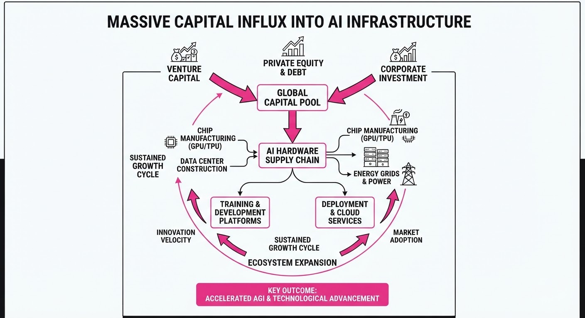
A massive wave of institutional capital is flooding the AI hardware and infrastructure sector, signaling a strategic transition where compute is now treated as a foundational asset class rather than an operational expense. While major players like Nvidia are architecting half-trillion-dollar financing vehicles to sustain the build-out of sovereign AI clouds, venture firms are simultaneously doubling down on the software and virtualization layers required to manage this hardware.
- Capital Consolidation: The market is shifting from experimental software development to heavy-duty, capital-intensive infrastructure deployment.
- Virtualization Focus: New funding is targeting the efficiency gap, aiming to maximize GPU utilization rates through advanced virtualization.
- Ecosystem Integration: Hardware giants (Nvidia) and networking leaders (Cisco) are tightening partnerships to create "Secure AI Factories."
🏭 Industry Angle: The "Compute-as-a-Utility" model is maturing; expect massive capex cycles to continue as firms race to build the physical backbone of the next generation of generative models.
2. Key Details & Timeline (with numbers)
- Nvidia Infrastructure Pool: Nvidia has reportedly assembled a $500 billion financing pool to support the massive capital requirements of developing global AI infrastructure.
- a16z "Machine Age" Fund: Andreessen Horowitz officially closed a $1.1 billion fund specifically targeting the intersection of AI hardware, infrastructure, and the "Machine Age" tech stack.
- Thunder Compute Seed: The GPU virtualization startup raised $13 million to develop technology that allows for more efficient partitioning and sharing of high-end GPUs.
- Cisco-Nvidia Alliance: Cisco is expanding its "Secure AI Factory" initiative, integrating its networking hardware with Nvidia’s compute platforms to provide enterprise-grade infrastructure.
3. By the Numbers
| Metric | Details |
|---|---|
| Nvidia Financing Pool | $500 Billion (Total capital pool announced 2026-Q3) |
| a16z Machine Age Fund | $1.1 Billion (Fund closed 2026-Q3) |
| Thunder Compute Funding | $13 Million (Seed round, 2026-Q3) |
| Market Shift | Shift from software-only to hardware-heavy capex (Ongoing 2026) |
4. Impact & What to Watch
- Hardware Scarcity Relief: If these infrastructure pools successfully deploy, the persistent bottleneck of GPU availability for startups may begin to ease by 2027.
- Valuation Pressure: With $500B+ entering the infrastructure space, expect increased M&A activity as infrastructure providers look to consolidate smaller specialized hardware and middleware firms.
- Watch 1: Monitor the utilization rates of these new "AI Factories"—if demand for compute softens, the massive debt/capital load could create significant market volatility.
- Watch 2: Track the regulatory response to Nvidia’s massive financing influence, specifically whether antitrust bodies view this capital pool as a barrier to competitive entry.
Clustered AI-news topic · appeared across 1 recent run(s) · salience 0.8/10
Citations:
- Xpeng Robotics Raises $900 Million at $6.3 Billion Valuation — dscnextconference.com (2026-08-25)
- SoftBank Seeks Second $10 Billion OpenAI Loan — valueaddvc.com (2026-08-28)
- Rillet Raises $100 Million for AI-Native ERP Platform — alleywatch.com (2026-08-24)
AI Market Valuation Soars: 900M Robotics Funding and750M Perplexity Revenue
1. What Happened & Why It Matters
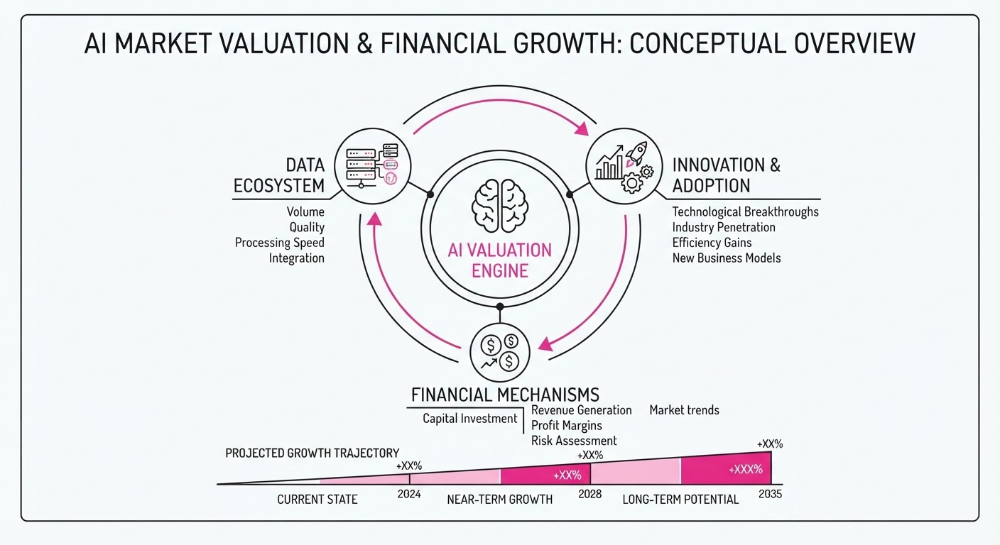
The AI sector is seeing a massive influx of capital and rapid commercial scaling, characterized by record-breaking private financing and surging annualized revenue for key players. These milestones signal a transition from experimental AI to high-velocity, revenue-generating enterprise and physical infrastructure.
- XPeng Robotics secured the largest single-round private financing in China’s embodied AI sector to accelerate humanoid production.
- Perplexity has tripled its annualized revenue in eight months, driven by its agentic "Computer" product.
- Rillet reached unicorn status, underscoring investor appetite for "AI-native" enterprise software that displaces legacy incumbents.
🏭 Industry Angle: Massive debt-leveraging by firms like SoftBank to fund AI stakes, paired with aggressive revenue growth, highlights a "growth-at-all-costs" environment where firms are betting heavily on long-term agentic and physical AI dominance.
2. Key Details & Timeline
- XPeng Robotics: Raised 900M at a6.3B post-money valuation (announced 2026-08-24). The capital supports mass production of the "IRON" humanoid robot, targeting 1,000 units monthly capacity.
- Perplexity: Annualized revenue grew from <250M to >750M (January 2026 – August 2026). Nvidia is reportedly in talks to invest at a valuation exceeding $30B.
- Rillet: Secured 100M in Series C funding at a1B valuation (announced 2026-08-19). This was the company's third funding round in 12 months.
- SoftBank OpenAI Debt: Seeking a second 10B loan collateralized by its OpenAI stake (August 2026), following a10B loan closed on 2026-08-06.
3. By the Numbers
| Metric | Before | After | Delta / Date |
|---|---|---|---|
| Perplexity Revenue | <$250M | >$750M | +$500M (+200%), Aug 2026 |
| Perplexity Valuation | $20B | >$30B | +$10B (+50%), Aug 2026 (Est.) |
| Rillet Funding | <$100M | $200M+ | +$100M (Total), Aug 2026 |
| SoftBank OpenAI Debt | $40B (Bridge) | >$50B (Total) | +$10B (Loan), Aug 2026 |
Note: XPeng Robotics raised 900M at a6.3B post-money valuation (Series A/Initial, 2026-08-24).
4. Impact & What to Watch
- Shift to Physical AI: The massive capital injection into XPeng suggests the market is pivoting from purely digital LLMs to "Physical AI," where robots integrate foundation models into real-world workflows.
- The "Agentic" Premium: Both Perplexity and Rillet demonstrate that "agent-first" architectures—which automate task execution rather than just providing information—are currently commanding the highest valuation premiums.
- Watch 1: Whether SoftBank’s aggressive debt-leveraging for OpenAI stakes faces credit risk if AI sector growth cools or if private company valuations are corrected.
- Watch 2: The "circular financing" scrutiny; regulators are increasingly monitoring whether tech suppliers (like Nvidia) are inflating the apparent demand for their own products by funding their customers.
Clustered AI-news topic · appeared across 1 recent run(s) · salience 0.8/10
Citations:
- Nvidia AI Servers Face 15% Price Increase — promptinjection.net (2026-08-23)
- Nvidia Accelerates Open-Weight Model Release Cadence — shattered.io (2026-08-29)
Nvidia Hikes AI Server Prices by 15%+ as Model Release Cadence Accelerates
1. What Happened & Why It Matters
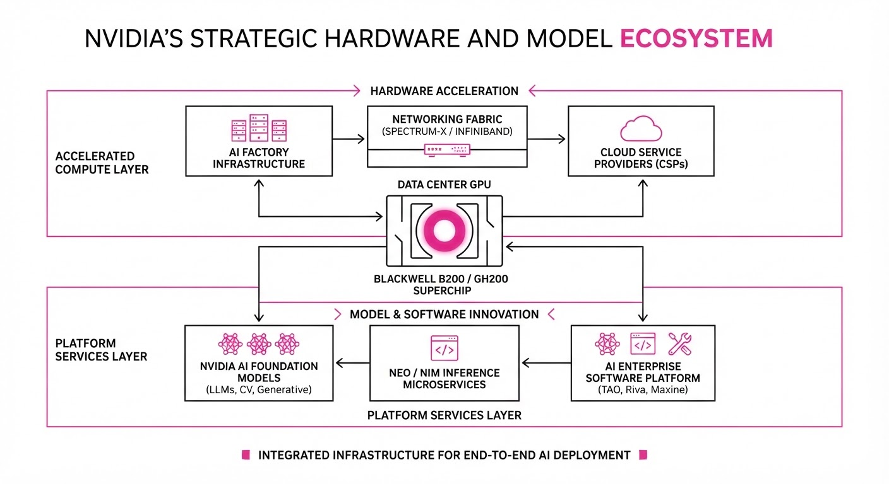
Nvidia is simultaneously tightening its grip on the AI software ecosystem while passing on surging hardware costs to its hyperscaler customers. While the company has slashed its model release cycle to a "rolling update" pace, the physical infrastructure required to run these models—specifically servers using Grace Blackwell and Vera Rubin architectures—is seeing price increases of 15% or more due to critical memory shortages.
- Software Strategy: Nvidia is transitioning from infrequent, major model releases to a 4–6 week cadence, aiming to make its software stack the industry default.
- Hardware Reality: A global crunch in High Bandwidth Memory (HBM) and DRAM has forced Nvidia to pass significant cost increases to partners like Microsoft, Google, and Oracle.
🏭 Industry Angle: The "compute-to-memory" cost ratio is inverting; as GPU silicon becomes a smaller percentage of total system cost, memory suppliers are gaining unprecedented leverage over AI infrastructure pricing.
2. Key Details & Timeline (with numbers)
- Model Velocity: Nvidia shifted its open-weight model release cadence from a 6–8 month cycle to a 4–6 week cycle, confirmed August 24, 2026.
- Hardware Inflation: AI server prices for systems shipping in early 2027 are rising by >15%, with some configurations seeing hikes up to 17%.
- Memory Bottleneck: Memory now accounts for roughly 25% of the total rack cost—a 435% increase in memory-related component costs per generation.
- Supply Commitments: Nvidia’s future supply and capacity commitments reached 279 billion as of late August 2026, up from119 billion just three months prior, primarily to secure HBM and critical components.
3. By the Numbers
| Metric | Before | After | Delta / Date |
|---|---|---|---|
| Model Release Cadence | 6–8 months | 4–6 weeks | −80% (approx.), effective Aug 2026 |
| AI Server Pricing | Base Price | +15% to 17% | Effective early 2027 shipments |
| Nvidia Supply Commitments | $119B | $279B | +$160B (+134%), Q2 2026 |
| Data Center Revenue | $41.0B* | $89.0B | +$48B (+117% YoY, Q2 2026) |
\Calculated based on Q2 2025 reported data relative to Q2 2026 growth.*
4. Impact & What to Watch
- Margin Pressure: While Nvidia maintains ~75% gross margins, the shift toward passing on memory costs suggests even the market leader is reaching the limits of absorbing component inflation.
- Hyperscaler Response: Expect accelerated investment in custom silicon (TPUs, Trainium, Maia) as cloud providers attempt to bypass Nvidia’s hardware price hikes.
- Watch Next: Monitor the Q4 2026 earnings for further supply chain adjustments and whether the 15% price hike triggers a slowdown in hyperscaler capital expenditure growth.
- Watch Next: Observe if competitors or smaller model labs can capitalize on Nvidia’s "rolling update" cadence to capture developers who prefer stability over frequent, potentially disruptive model changes.
Engineering blog · Anthropic · Published: 2026-08-28 · salience 9.5/10
Why it matters: Provides a comprehensive architectural blueprint for scaling agentic SDLC, focusing on critical governance and human-in-the-loop patterns.
Read the post: Anthropic
Scaling Development via the AI-Native SDLC Playbook
1. What They Built & Why
Anthropic released the "AI-Native SDLC Playbook," a strategic framework for shifting software development from human-led coding to an agent-led, goal-oriented lifecycle. The core problem is that as AI agents accelerate code generation, traditional human-speed governance (reviews, security, approvals) becomes the primary bottleneck. To solve this, Anthropic proposes a "software factory" model where agents handle multi-step tasks across planning, building, testing, and deployment, while humans transition into roles focused on intent, policy definition, and high-level judgment.
2. How It Works (the practical bits)
- Artifact-Driven Handoffs: Each SDLC stage (Plan → Spec → Build → Test → Deploy) produces version-controlled, machine-actionable artifacts (e.g.
intent.mdspec.md) that serve as the input for the next agent or stage. - Intent-Based Execution: Engineers define the "what" and "why" in an
intent.mdfile rather than writing code, allowing agents to pursue goals across multiple steps autonomously. - Governance as Code: Security, compliance, and architectural standards are embedded directly into the workflow as automated hooks and guardrails, ensuring agents operate within defined constraints.
- Human-in-the-Loop (HITL): Humans remain the ultimate authority, focusing their attention on critical decision points and approvals rather than manual implementation.
3. Takeaways You Can Apply
- Identify Your Bottleneck: If your agents are shipping code faster than your security or QA teams can review it, stop tuning the agents and start automating the governance layer.
- Standardize Handoffs: Designate machine-readable files as the "source of truth" between stages to enable seamless, automated transitions between specialized agents.
- Shift to Policy Engineering: Spend less time on syntax and more time writing clear intent documentation and encoded policies that agents can interpret and follow.
Engineering blog · Databricks · Published: 2026-08-24 · salience 9.0/10
Why it matters: Offers a concrete, end-to-end case study on building an agentic system for incident response with practical sandboxing and approval workflows.
Read the post: Databricks
Automating Incident Root Cause Analysis with Agentic Workflows
1. What They Built & Why
Databricks developed an agentic system to reduce the "mean time to investigate" (MTTI) for production incidents. By integrating their internal data lineage tools with LLM-based reasoning, the system automatically traces the root cause of data pipeline failures, drafts potential fixes in isolated sandboxes, and orchestrates human-in-the-loop approvals before deployment.
2. How It Works (the practical bits)
- Context Retrieval: Uses Databricks Unity Catalog to map data lineage, providing the agent with a precise graph of dependencies rather than relying solely on logs.
- Orchestration: Employs a multi-step agentic loop that decomposes incident alerts into sub-tasks: root cause hypothesis, impact analysis, and code generation.
- Sandboxed Execution: Drafted fixes are executed in ephemeral, isolated environments to validate outcomes without risking production data integrity.
- Human-in-the-Loop (HITL): Implements a mandatory approval gate where engineers review the agent’s reasoning and proposed code changes via a structured UI before any remediation is applied.
3. Takeaways You Can Apply
- Leverage Metadata Graphs: Don't just feed raw logs to agents; provide structured lineage metadata to ground reasoning and prevent hallucinations regarding system architecture.
- Verify Before Committing: Always pair agentic code generation with a sandboxed execution environment to test fixes against real (but isolated) data before proposing a merge.
Engineering blog · LangChain · Published: 2026-08-25 · salience 8.5/10
Why it matters: Essential reading for engineers needing to build robust, reproducible evaluation environments for agentic performance testing.
Read the post: LangChain
Building Reproducible Agent Evaluation Environments
1. What They Built & Why
The LangChain team developed a structured, two-step pipeline to create synthetic agent environments and task specifications. Because agent behavior is non-deterministic, testing requires more than just prompts; it requires reproducible "worlds" where agents can be stress-tested. This system allows engineers to convert messy production traces, code, or human input into rigorous, repeatable evaluation tasks, preventing regressions and enabling iterative performance improvements.
2. How It Works (the practical bits)
- Two-Step Pipeline: First, define a "world spec" (domain knowledge/context); second, use AI to generate granular task specs (input, environment, and test scripts) from that world.
- Task Specification: Tasks include explicit natural-language descriptions and programmatic test scripts to ensure the agent's work is verifiable.
- Environment Injection: Agents are given environment-specific context (e.g., file paths, tool availability) to reduce the "error surface" during execution.
- Testable Code Prompting: System prompts explicitly instruct the agent that its output will be measured against programmatic tests, encouraging the agent to verify its own work.
- Feedback Loops: Production failures are converted directly into new evaluation tasks, turning every error into a future benchmark.
3. Takeaways You Can Apply
- Prioritize Manual Review: Before automating, manually review 20–50 real agent traces to identify failure patterns; if you cannot articulate why a failure happened, you aren't ready for automated evals.
- Separate Evals: Maintain distinct sets for "capability evals" (testing new features) and "regression evals" (ensuring existing functionality remains stable).
- Adopt "Test-Driven" Agenting: Prompt your agents to build and run their own verification tests before finalizing a solution, significantly reducing the "happy path" bias.
Engineering blog · NVIDIA · Published: 2026-08-11 · salience 8.0/10
Why it matters: Details a high-performance routing architecture for optimizing agent latency and cost, which is crucial for production-grade deployments.
Read the post: NVIDIA
Optimizing Agentic Workflows with NeMo Switchyard
1. What They Built & Why
NVIDIA introduced NeMo Switchyard, an orchestration architecture designed to solve the latency and cost inefficiencies inherent in monolithic agentic systems. By implementing dynamic model routing, the system ensures that complex reasoning tasks are handled by high-capability models (like Nemotron 3.5), while simpler sub-tasks are routed to smaller, faster, and more cost-effective models. This approach allows engineering teams to maintain high performance without over-relying on expensive, large-scale LLMs for every interaction.
2. How It Works (the practical bits)
- Dynamic Routing Engine: Uses a classification layer to analyze incoming prompts and route them to the optimal model based on task complexity.
- Model Specialization: Integrates Nemotron 3.5 Lightning, a distilled model optimized for high throughput and low-latency inference.
- Orchestration Pattern: Employs a "Switchyard" controller that manages context state across model handoffs, ensuring continuity in multi-step agentic workflows.
- Efficiency Guardrails: Implements latency-based thresholds to trigger fallback mechanisms, ensuring the system maintains strict SLAs during peak load.
3. Takeaways You Can Apply
- Decouple Reasoning from Execution: Don't use your largest model for every step; build a routing layer to handle trivial tasks with smaller, cheaper models.
- Optimize for Throughput: Use distilled models (like Lightning variants) for high-frequency agent interactions to significantly reduce the cost-per-token.
- Implement State-Aware Routing: Ensure your orchestration layer persists context across different models so users experience a seamless agent flow despite backend model switching.